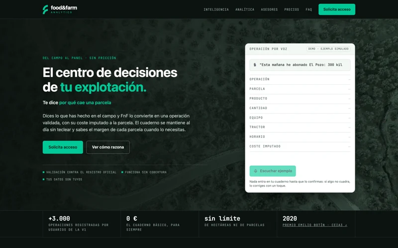
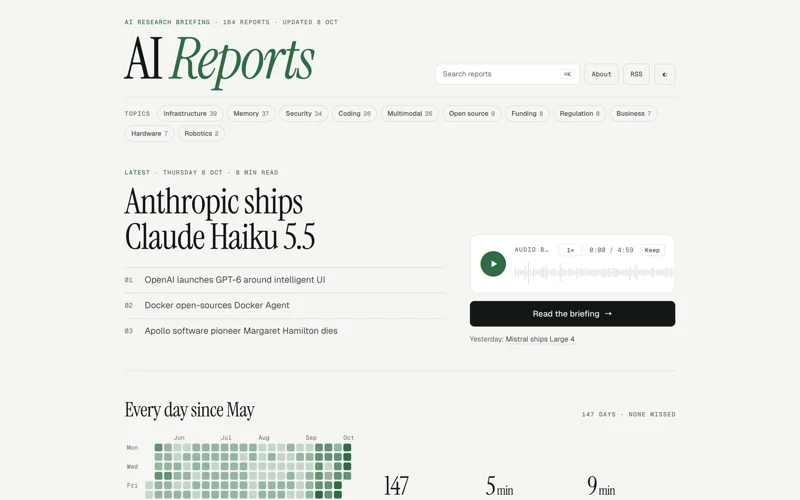
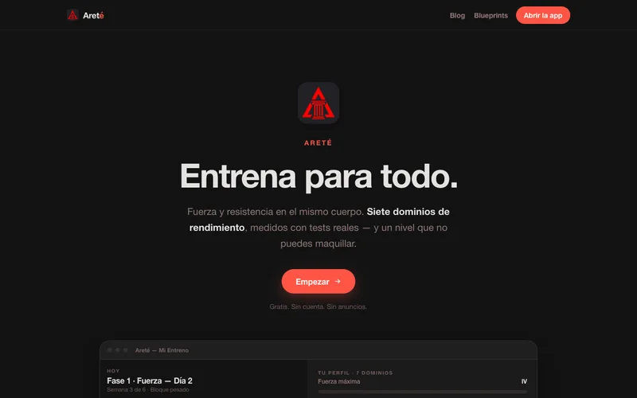

AI for operations. Answers you can audit.
I build knowledge graphs, agents and evaluation pipelines on top of production systems. My background is SRE, so I care about what happens after the demo.
Three systems, and how they are built
Problem, architecture, decisions and measured result for each one.
Operational knowledge graph
One ontology over live operations systems, exposed to AI agents through MCP. It stores no data.
5,000+ queries · p50 0.6 sBookreader
An AI reading agent that runs in the browser, with end-to-end encrypted sharing, a read-only MCP server and its own evals.
61 architecture decisions on recordAutodispatcher
A neural network, trained on 18 months of tickets, that assigns each incident to the right engineer.
45 min → under 5 minAI products I run in production
My own, end to end: the product, the infrastructure and the AI.

Food & Farm Analytics
Farmers dictate what they did and AI turns it into an operation checked against the official registry, with its cost per plot.
Django · django-ninja · HTMX · Postgres/PostGIS · Celery
AI Reports
A pipeline that researches, writes and checks its sources. One report a day since May. The text is written by AI.
Python · LLM pipeline · fabrication checks · GitHub Pages
Bookreader
An AI reader that explains what you read and helps you remember it. No account, in your browser.
Vanilla JS PWA · Cloudflare Workers · MCP · LLM evals
Areté
Strength and endurance training: seven domains measured with real tests and a plan that adapts.
Vanilla JS PWA · Cloudflare · VitestReliability first, in pharma
I led an SRE team from 2022 to 2025. Now I work as an AIOps engineer on the same kind of systems: they must hold up, and we must find out before users do.
- Observability and incident response with Splunk ITSI and PagerDuty
- Automation with Rundeck, Ansible and Python
- CI/CD and Kubernetes, with measured availability targets
- AI for operations: classify, prioritise and diagnose
Automation platform
About 3,000 jobs a day, deployed on Kubernetes with Ansible and Jenkins. Custom plugins for Splunk, ServiceNow and Vault.
Autodispatcher
A neural network classifies ServiceNow incidents and assigns them to the right engineer. Assigning a ticket now takes 90% less time.
Bulk changes without mistakes
Automations so teams can update hundreds of AWS accounts at once, with guides and demo sessions.
I teach what I use every day
Python since 2023, DevOps since 2024, and now AIOps and LLM agents. Every course has its open repository.
Hiring for AI, SRE or platform engineering?
Write to me or find me on LinkedIn. I am happy to go through any of these systems in detail.